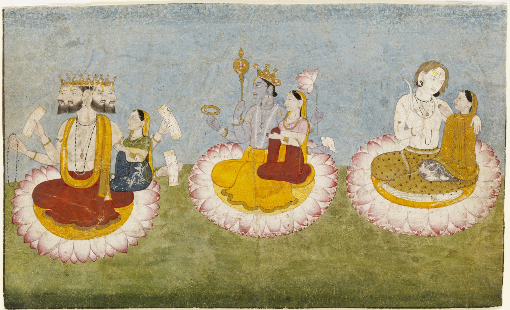
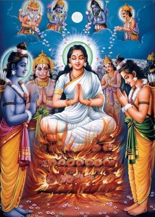
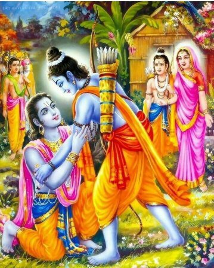
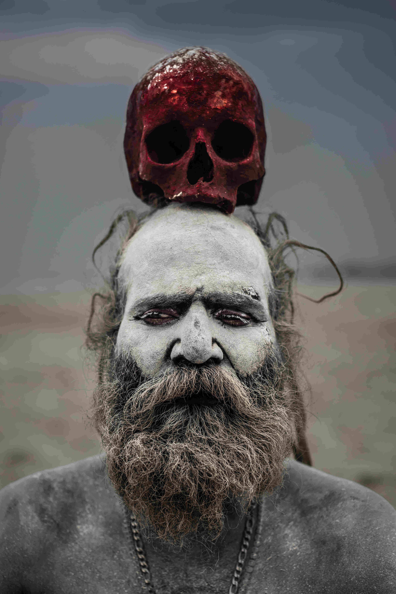
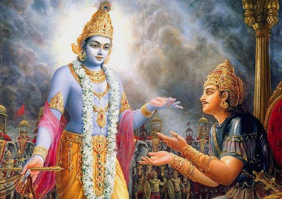

This page consists of basic information about the three dynamic deities which should be known by the vieweres/readers. Please do acknowledge that the information available on this website is collected by a student. Enjoy your stay!
1. According to Hindu mythology life of Earth is equal to a day of Brahma.
2. According to Ramcharitmanas, Sita never went to Lanka, only her shadow was there while she was residing in the fire. That's why in the end Agni pariksha was performed to get original Sita back not because lord Rama doubted her.
3. For all the time when Lord Rama was in the forest, his younger brother Bharat used to sleep in a pit under the ground as Lord rama was sleeping on the ground and Bharat can't be equal or above to rama in any manner.
4. Meghnad (Son of Ravana) had a boon that only person who will not sleep for 12 years can kill him, guess what even Rama couldn't kill him but Lakshman did as he did not sleep for the whole time when he was in forest. His sleep was transferred to his wife Urmila by Nidra Devi.
5. According to the boon asked by Ravan, Hanuman was also capable of killing him. He asked that other than humans and monkeys no one could kill him. Given the strength of Hanuman, he was powerful enough to kill Ravana.
6. Lord Rama and Krishna stopped ageing after they became 16. They are kishore (adolescent ). That's why you don't see them with moustache or beard in any photos or tv serials.
7. Parvati (wife of Shiva) did not give birth to any of her children still she is called jagat janani (mother of the world).
8. King Janak (Father of Sita) is also known as Videh as he looses the feel of his body whenever he is thinking about God.
1. Aghoras devote him in their own way, by having meat, dancing naked, smoking marijuana.
2. We also devote him in our Temples, by offering him Sandalwood and Milk (milk is another controversy in itself).
3. He can also be devoted through the means of Spirituality, by taking the internal path, finding the Shiva within.
4. He is worshipped by Men, Gods, and Demons. Basically by everyone.
5. He is a Hermit. A self controlled, celibate ascetic.
6. He is a House Holder too. He has a wife, 2 sons, and a daughter.
7. He is Bhole (kind), and he is also the Rudra (wild).
8. He has conquered over the ‘Nat' , the demon of epilepsy.
9. He is still feared for his wrath of the third eye, which brings calamity if went out of control.
10. He is the Ardhnarishwar (Half man-Half woman). Our society still can't accept the other genders.
Before there was creation, there was Vishnu asleep and floating in a vast sea of nothingness. Upon waking and stirring, a lotus sprang from his belly and blossomed, giving birth to Brahma. Brahma then set out to create the entire universe.
